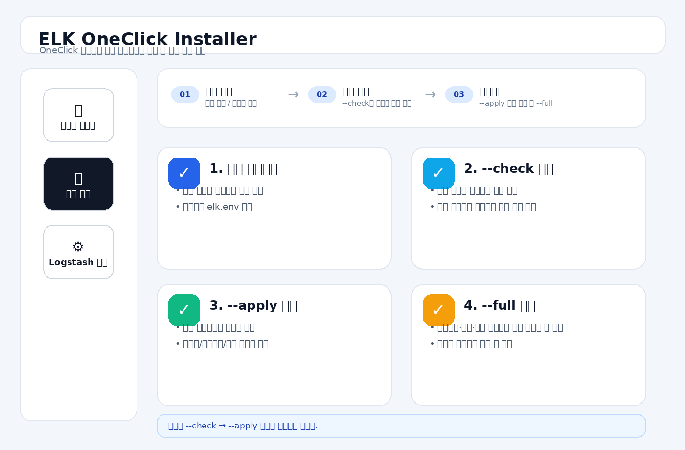

ELK OneClick 구버전 업그레이드 가이드
기존 OneClick 설치 서버에서 업데이트 유형별로 안전하게 최신 관리 도구와 구성을 반영하는 절차
v2.9.39 기준 · 2026-10-13 · Ubuntu 22.04/24.04업그레이드 화면 예시
구버전 OneClick 관리도구를 최신으로 올릴 때의 흐름입니다. 보통은 --check → --apply 순서로 진행합니다.

실제 접속 주소: https://etech-symantec.github.io/elk/
ELK OneClick Installer 화면 예시
아래는 index.html의 화면을 이해하기 쉽게 정리한 목업 이미지입니다. 실제 작업은 웹 페이지에서 진행하세요.

https://etech-symantec.github.io/elk/01 · 업그레이드 방식 선택
| 방식 | 동작 | 추천 상황 |
|---|---|---|
--check | GitHub 파일 메타데이터 비교 | 업데이트 여부·영향도 사전 확인 |
--apply | 바뀐 런타임 도구만 차등 교체 | 리포트·로그 처리기·관리도구 업데이트 |
--force | 관리용 런타임 파일 강제 재복사 | 관리 파일 훼손 복구 |
--full | 최신 install-elk.sh를 현재 elk.env로 실행 | Dashboard·Logstash 실제 구성 재적용이 필요한 경우 |
--full은 패키지 설치·서비스 재시작·실제 설정 변경을 수반할 수 있습니다. 운영 서버에서는 반드시 유지보수 시간과 설정 백업을 확보하세요.02 · 시작 전 확인
현 상태·설정 백업
- 현재 버전 확인
- 리포트 확인
elk.env백업 생성
sudo elk-oneclick-version
sudo elk-report
sudo cp -a /etc/elk-auto/elk.env /etc/elk-auto/elk.env.backup.$(date +%Y%m%d-%H%M%S)GitHub 설정 확인
sudo grep -E "^ONECLICK_GITHUB_(OWNER|REPO|BRANCH)=" /etc/elk-auto/elk.env기본 대상은 etech-symantec/elk의 main 브랜치입니다. 업데이트할 최신 파일이 실제 GitHub 저장소에 반영돼 있어야 합니다.
03 · 업데이트 대상과 영향 분석
- 보통 가장 먼저 실행합니다.
- 출력되는 추천 작업 방식을 꼭 확인하세요.
sudo elk-oneclick-update --check설치 엔진·Logstash 필터·런타임 파일의 변경이 분류됩니다. 안내되는 추가 작업 권고를 확인하세요. --check에서 변경 파일이 있을 때 종료 코드 10이 발생하는 것은 업데이트 감지 결과일 수 있습니다.
04 · 차등 업데이트
관리 스크립트만 갱신
- 보통 이 방법부터 사용합니다.
- 리포트·업데이터·로그 처리기 같은 도구 갱신에 적합합니다.
sudo elk-oneclick-update --apply업데이트 결과 확인
sudo elk-oneclick-version
sudo elk-report리포트 웹 스크립트 변경 시 서비스가 자동 재시작될 수 있습니다. 설치 엔진은 --apply에서 실행하지 않습니다.
05 · Dashboard/로그 포맷/Timezone 반영
기존 elk.env 설정 확인
sudo grep -E '^(TIMEZONE|PROXYSG_CLOUD_LOG_FORMAT|KIBANA_CREATE_PROXYSG_DASHBOARD|PROXYSG_CLOUD_ENABLED)=' /etc/elk-auto/elk.env신규 버전의 기본값 변경은 기존 elk.env에 명시된 값을 자동으로 덮어쓰지 않습니다. Wizard의 02 설정값 패치에서 필요한 값을 먼저 수정하세요.
구성 재적용이 필요한 경우에만 실행
- 필요할 때만 사용하세요.
- 서비스 재시작이나 실제 구성 변경이 있을 수 있습니다.
sudo elk-oneclick-update --full결과 확인
- 리포트 확인
- 3개 서비스 상태 확인
sudo elk-report
sudo systemctl status elasticsearch kibana logstash --no-pagerKibana 통합/개별 MAIN·SSL·Cloud Dashboard, Logstash 설정 검사 결과, timezone 표시, 수집 상태를 확인합니다.
--full 전에 반드시 별도 검토하세요. 등록했다고 해서 기존 설치 환경을 OneClick installer가 안전하게 재구성할 수 있는 것은 아닙니다.06 · updater 명령이 없는 구버전
구버전에서는 GitHub Owner/Repo의 기본 placeholder 때문에 elk-oneclick-update가 아예 설치되지 않은 사례가 있습니다. 이때에는 신뢰할 수 있는 v2.9.39 패키지에서 _internal/core/elk-oneclick-update.sh를 확보해 서버에 복사합니다.
elk-oneclick-update 명령이 없다면 업데이터 파일을 직접 설치한 뒤 다시 점검합니다.sudo install -m 755 elk-oneclick-update.sh /usr/local/sbin/elk-oneclick-update
sudo elk-oneclick-update --check환경값은 현재 서버의 /etc/elk-auto/elk.env를 우선 확인합니다. 이 명령은 updater 파일만 설치하는 복구 조치이며 패키지 전체 업그레이드가 아닙니다.
07 · 변경 항목별 후속 작업
| 변경 | --apply | 후속 작업 |
|---|---|---|
| elk-report.sh / report-web.py | 적용 가능 | 리포트 갱신·브라우저 새로고침 |
| proxysg-log-process.sh | 적용 가능 | 다음 처리 주기에 새 로직 사용 |
| proxysg-log-filter.conf | 템플릿 교체 | 실제 Logstash 필터 재생성은 별도 필요 |
| Kibana Dashboard 정의 | 설정 적용 안 됨 | --full 검토 |
| Cloud 로그 기본 포맷 | 기존 elk.env 불변 | 포맷 값 패치 + 재적용 |
| localtime/date time 파싱 | 템플릿 교체 | 실제 pipeline 재적용 및 새 로그부터 확인 |
기존 Elasticsearch 문서의 @timestamp는 설정만 바꿔도 자동 재계산되지 않습니다. 재수집/재색인이 필요한지 별도로 판단하세요.
08 · 업데이트 장애 대응
- 다운그레이드 차단 메시지: 서버 설치 버전과 GitHub 릴리스 비교 확인
- HTTP 404/403: 저장소 공개 여부, 브랜치와 실제 파일 위치 확인
- 429/API 제한: GitHub API 요청 제한 확인
- Logstash 중지/시작:
--full진행 중 일시적인 수집 공백이 발생할 수 있음 - 대시보드가 미변경: 최신 GitHub에 실제 installer 정의가 게시됐는지와
--full성공 여부 확인
📁 elk.env와 SH 파일, 무엇에 쓰나요?
쉽게 말해 elk.env는 설정표, SH는 그 설정을 읽고 작업하는 실행 파일이에요.
서버 주소, 시간대, 로그 폴더, MAIN/SSL/Cloud 옵션처럼 설치·운영에 필요한 값을 적어두는 파일입니다.
설정표를 읽어 설치하거나 상태를 검사하는 Linux용 스크립트입니다. 종류마다 역할이 달라요.
1. elk.env 확인·백업
설치 후 기본 위치는 /etc/elk-auto/elk.env입니다. 비밀번호와 API 키가 들어갈 수 있으므로 공개 저장소나 메신저에 파일 내용을 올리지 마세요.
sudo ls -l /etc/elk-auto/elk.envsudo cp -a /etc/elk-auto/elk.env /etc/elk-auto/elk.env.bak.$(date +%Y%m%d-%H%M%S)설정값을 바꾸더라도 모든 실행 중 서비스에 즉시 반영되는 것은 아닙니다. 항목에 따라 설정값 패치나 재적용이 필요해요.
2. 기존 서버 업데이트는 어떤 SH가 담당하나요?
elk-oneclick-update.sh가 서버에 설치되면 elk-oneclick-update 명령으로 실행됩니다. 새 설치 SH를 다시 실행하는 것과는 목적이 달라요.
sudo elk-oneclick-update --checksudo elk-oneclick-update --apply--full은 현재 elk.env 설정을 기준으로 Logstash와 Dashboard 등의 구성을 다시 반영하므로, 백업을 확인하고 점검 시간에 사용하세요.
sudo elk-oneclick-update --full